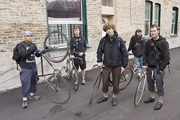

All workers engaged in municipal, short distance transportation and telecommunication services.
Submitted on Thu, 07/06/2006 - 8:04pm
The founders of Chicago's first bike messenger collective think there's gotta be a better way.
Written by Scott Eden; photographs by Jon Randolph.
June 23, 2006
The Chicago Reader
RENE CUDAL WAS the last to quit. The Friday after Labor Day 2005 was the day he’d marked in his calendar, but he procrastinated all morning and afternoon, dreading the moment his boss would put two and two together. Finally the boss went home. Cudal called him that evening and gave him two weeks’ notice.
A bike messenger quitting isn’t so unusual—messengers will tell you they all develop a strategy to extract themselves from the job, which is defined by a high risk of bodily harm, low wages, and few or no benefits. Michael Carey, Cudal’s boss at On Time Courier, was a former messenger himself. But Carey, a big, block-shouldered man with a reputation as both a polished salesman and a hard-line intimidator, didn’t take Cudal’s news well. “What’s happening?” Cudal remembers him saying. “What are you doing? Starting your own messenger company?”
Submitted on Wed, 04/19/2006 - 9:45pm
VOICE OF THE PEOPLE (LETTER) - Chicago Tribune, March 28, 2006, By Sam Goldman Chicago -- Upon reading the March 17 Chicago Tribune editorial "There oughta be a law," I was irked by the irresponsibility of this paper's assertion that "immunity from prosecution could be extended to any pedestrian who knocked over a bicycle messenger."
I remind you that bicycle messengers in Chicago play an important role in lubricating the wheels of our economy.
I am a messenger in Chicago, and a delegate in the Chicago Couriers Union, and there are roughly 300 bike messengers in Chicago.
We pick up and deliver thousands of documents, packages, meals, and odds and ends to and from Chicago's corporations, law firms, restaurants, architecture firms, hospitals, municipal building, courts, banks, retail shops and residences.
Submitted on Wed, 04/19/2006 - 11:02am
Staff Report - Industrial Worker, May 2006
 A state supreme court judge has ordered New York Transit Workers Union Local 100 to pay the state a $2.5 million fine, revoked the union's right to collect dues from workers' pay checks, and sentenced President Roger Toussaint to 10 days in jail and a $1,000 fine for refusing a court order to cancel the December mass transit strike. Subway and bus workers have also been docked several days' pay for joining the strike.
A state supreme court judge has ordered New York Transit Workers Union Local 100 to pay the state a $2.5 million fine, revoked the union's right to collect dues from workers' pay checks, and sentenced President Roger Toussaint to 10 days in jail and a $1,000 fine for refusing a court order to cancel the December mass transit strike. Subway and bus workers have also been docked several days' pay for joining the strike.
Toussaint called off the transit strike on its third day without an agreement; in January union members voted down the concessionary settlement the Metropolitan Transportation Authority offered when workers were back on the job.
Submitted on Thu, 03/23/2006 - 7:20pm
Mr. Mahmoud Ahmadjinejad,
President of the Republic
The Presidency,
Palestine Avenue, Azerbaijan Intersection
Tehran
Islamic Republic of Iran
Fax: + 98-21-6648.06.65 or: + 98 21 649 5880
Dear Mr. President,
We have written you in the past concerning the situation with the bus workers and their union in Tehran. We understand that the situation has escalated since we last wrote you. The International Solidarity Committee of the Industrial Workers of the World wrote you previously requesting the release of imprisoned union activists and leaders. At that time no release occurred, and the workers sought to strike in protest of the illegimate and brutal repression on their coworkers and comrades. We have read that security forces of your government preemptively arrested and beat workers, and their families including workers' wives and children. Thereafter an international campaign was launched to free these workers from wrongful harm. We understand that now most of the arrested workers have been freed.
Submitted on Tue, 03/07/2006 - 12:54pm
By Harry Harrington - Industrial Worker, March 2006
 Shocking city and state politicians, the corporate world and their bosses at the MTA, New York City transit workers rejected their proposed contract after a three-day strike. The vote was close; of 22,461 total votes cast, 11,227 Transit Workers Union members voted to ratify the contract, and 11,234 voted against – a difference of only seven votes.
Shocking city and state politicians, the corporate world and their bosses at the MTA, New York City transit workers rejected their proposed contract after a three-day strike. The vote was close; of 22,461 total votes cast, 11,227 Transit Workers Union members voted to ratify the contract, and 11,234 voted against – a difference of only seven votes.
This was a significant defeat for Transport Workers Union local president Roger Toussaint. The Toussaint leadership spent $70,000 on a public relations firm to promote the contract while the Vote No Coalition/Transit Workers for a Just Contract (TWJC) spent less than $3,000 collected from the membership. The union inundated members with daily e-mails, phone calls and advertisements, and held borough-wide meetings to explain the contract, but these were an abysmal failure as he met widespread opposition to what the membership regarded as costly givebacks.